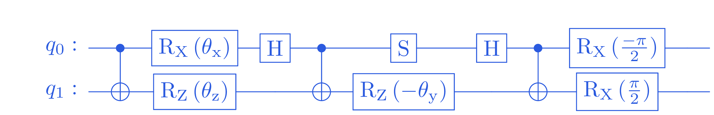

Stage 2: Foundations: the two-particle case#
For starters, we focus on the \(N = 2\) case with two lattice sites. Our work here motivates the derivation in the next phase. When \(N = 2\), the spin interaction Hamiltonian becomes
Here we have labeled the relevant spins by \(0\) and \(1\), for consistency with Python and Qiskit.
We will refer to the two-qubit time propagator \(U(t) = e^{-i \mathcal{H}_S t}\) as the block operator \(B(\theta)\), with \(\theta = \frac{t}{2} \begin{bmatrix} J_x & J_y & J_z \end{bmatrix}^T\). Explicitly,
with \(\delta = \theta_x + \theta_y\) and \(\gamma = \theta_x - \theta_y\).
Time propagation blocks#
The good news is that each \(4 \times 4\) block operator can be efficiently implemented on a quantum computer using a two-qubit circuit with at most \(3\) CNOT gates Peng et al. [PGAG22]. In particular, we use the following circuit for the general XYZ case.
{kind=link}
{kind=link}
The case \(J_x \cdot J_y \cdot J_z = 0\), where at least one of the coupling constants is zero, will be important later. Thus we consider it separately, and note that in this case there is an optimized quantum circuit that only requires \(2\) CNOT gates Peng et al. [PGAG22]. In particular, if \(J_y = 0\), the following circuit implements time propagation under
{kind=link}
{kind=link}
Begin by implementing these optimized \(2\)-qubit circuits, corresponding to the
block operators on a pair of sites. In particular, implement the
UXYZGate and UXZGate constructors defined in
src/propagators.py. Be sure to test your implementation using
XYZEvolutionTestSuite.test_uxyz() and
XYZEvolutionTestSuite.test_uxz().
- class src.propagators.UXYZGate(thetax, thetay, thetaz)[source]#
Bases:
QuantumCircuitConstruct a
QuantumCircuitimplementing the block operator \(U_{XYZ}(\theta)\) describing evolution according to the the Heisenberg \(XYZ\)-Hamiltonian\[H_{XYZ} = \frac{1}{2} \sum_{\alpha \in \{X, Y, Z\}} \theta_\alpha \, \sigma_0^\alpha \sigma_1^\alpha.\]Here
thetax,thetay, andthetazcan be of typefloatorqiskit.circuit.Parameter.EXAMPLES:
>>> from qiskit.circuit import ParameterVector >>> theta = ParameterVector("t", 3) >>> UXYZGate(*theta).draw() ┌──────────┐┌───┐ ┌───┐ ┌───┐ ┌──────────┐ q_0: ──■──┤ Rx(t[0]) ├┤ H ├──■────────┤ S ├──────┤ H ├──■──┤ Rx(-π/2) ├ ┌─┴─┐├──────────┤└───┘┌─┴─┐┌─────┴───┴─────┐└───┘┌─┴─┐├─────────┬┘ q_1: ┤ X ├┤ Rz(t[2]) ├─────┤ X ├┤ Rz(-1.0*t[1]) ├─────┤ X ├┤ Rx(π/2) ├─ └───┘└──────────┘ └───┘└───────────────┘ └───┘└─────────┘
- class src.propagators.UXZGate(gamma, delta)[source]#
Bases:
QuantumCircuitConstruct a
QuantumCircuitimplementing the block operator \(U_{XZ}(\gamma, \delta)\) describing time evolution under\[H_X + X_Z = \frac{\gamma}{2} \sigma_0^X \sigma_1^X + \frac{\delta}{2} \sigma_0^Z \sigma_1^Z.\]The parameters \(\gamma\) and \(\delta\) can be of type
floatorqiskit.circuit.Parameter.EXAMPLES:
>>> from qiskit.circuit import Parameter >>> gamma, delta = Parameter("gamma"), Parameter("delta") >>> UXZGate(gamma, delta).draw() ┌───────────┐ q_0: ──■──┤ Rx(gamma) ├──■── ┌─┴─┐├───────────┤┌─┴─┐ q_1: ┤ X ├┤ Rz(delta) ├┤ X ├ └───┘└───────────┘└───┘